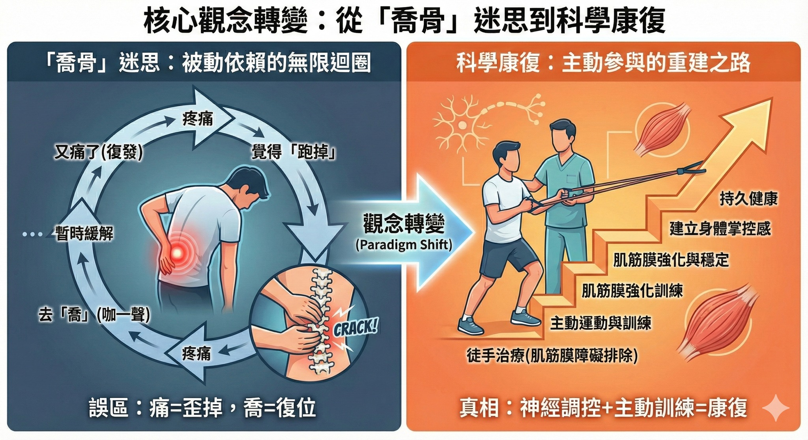

💥 從「喬骨」迷思到科學康復：你的疼痛真的是「跑掉」了嗎？🤔
💥 從「喬骨」迷思到科學康復：你的疼痛真的是「跑掉」了嗎？🤔
最近，在診間協助一位與下背痛和腰痛奮鬥兩年的年輕媽媽完成康復。看到她終於能正常生活、輕鬆照顧小孩、專心上班，並享有高品質的睡眠，真心為她感到由衷高興。
然而，她的康復之路走得異常艱辛，起因於兩年前一個令人痛苦的 #認知誤區 。
🤰 一個年輕媽媽兩年的疼痛長征
兩年前生產後，這位媽媽從媽媽社群看到一個排隊爆滿、很難預約的民俗調理工作室，主打「 #產後骨盆修復 」。衝著社團媽媽們的熱烈推薦，她也決定前往試試。
第一次處理約 15 分鐘，她感覺通體舒暢，非常滿意。操作者告訴她：「妳這個 #剖腹產 ，要調兩次。」
於是她去了第二次。不幸的是，第二次處理過程中她就開始覺得不舒服，但因為不好意思當下反應，以為這是操作流程中的必要步驟，便忍著完成了調理。
處理後沒過幾天，疼痛開始劇烈惡化，甚至痛到影響日常生活的行動。當她回去反應時，得到的卻是冷漠的回應：「啊，其他人都不會誒！妳這個可能要去看醫生！」
就這樣，她開啟了長達兩年多四處求助、飽受腰痛折磨的日子。
🔄 「跑掉了」的無限迴圈：迷思的陷阱
在民俗或非主流的觀念中，有一種根深蒂固的說法：只要身體感到疼痛、不舒服，就是「跑掉了」或「歪掉了」，所以就應該「喬回去」。
於是，人們去尋求「咖」一聲的手法，以為骨頭真的被「喬回去了」。但過不久，疼痛又開始了，他們便覺得「又跑掉了」，然後再去「咖」一下。
這形成了一個無限迴圈：
1. 痛了 → 覺得跑掉了 → 去「喬」
2. 感覺好了 → 又開始痛 → 覺得又跑掉了 → 再去「喬」
久而久之，許多人感到絕望：「為什麼我的問題一直跑掉？永遠都好不了？」甚至有人直接習慣了這種疼痛迴圈，自我催眠：「啊～我這個老毛病了啦！」
但，真的是這樣嗎？疼痛就等於跑掉？喬回去就等於解決問題？這邏輯真的成立嗎？那「咖」一聲，就代表真的喬回去了嗎？
🎯 科學證據的觀點：徒手治療有效，但不是因為「復位」！
讓我們從臨床科學的角度來看待「咖一聲」這一類的徒手治療（Manual Therapy，包括關節鬆動術、推拿或 HVLA 手法）的實際機制。
💡 核心結論：缺乏充足的證據
目前沒有充足的科學證據顯示，由物理治療師或脊骨神經醫師執行的徒手治療，能夠實際矯正關節錯位，或將關節恢復到所謂「原始」的解剖位置。
1. 關節位置：影像學的證據 ❌
多項採用高精度影像技術的研究證實，徒手治療帶來的益處，與改變關節的物理位置無關：
- 薦髂關節 (SI joint)：研究發現，即使徒手推拿對減輕疼痛有效，也沒有改變薦髂關節的三維位置 (Tullberg, 1998; de Toledo, 2020; Nim C. et al., 2025)。
- 文獻總結：最新的系統性回顧 (Young K.J. et al., 2024) 堅定指出：「沒有證據顯示關節鬆動術/HVLA/脊椎推拿等技術，可以改變關節結構或關節位置。」
2. 但咖完有效啊！WHY??
徒手治療真正的機制：神經生理學 ✅
既然不是「喬骨頭」，那為什麼徒手治療能讓人感覺舒服、活動度變好？
✅ 答案是：它在影響你的神經系統與軟組織！
Chad E. Cook et al. (2024) 強調，關節鬆動術之所以能減輕疼痛、增加活動度，主要是透過 #神經生理學機制 作用，而不是透過「將骨頭推回位」。
簡單來說，它不是在搬動骨頭，而是在對你的「神經－筋膜－肌肉－骨頭」系統進行「重啟連結」與「降低疼痛敏感度」：
- 降低神經系統的敏感度。
- 短暫提升你的痛覺閾值。
- 解除肌筋膜力學障礙，並減少周圍肌肉的張力。
這是一種治療方式，讓你能在較不疼痛的狀態下，來重建大腦神經與肌筋膜之間的控制連結，有機會進行下一步更重要的動作訓練。
🌟 從依賴到獨立：改變心態才是關鍵
當你理解到疼痛與「關節跑掉」不一定劃上等號時，就可以擺脫那個令人困擾的「無限迴圈」和「依賴性心態」。
💔 舊有心態 (依賴)：
疼痛 →歪了 →找人喬 → 好了（但隨時會再歪）
✅ 科學心態 (獨立)：
疼痛 → 系統過度敏感 → 利用徒手治療「解除肌筋膜障礙」、「重建大腦神經連結」 → 利用運動、訓練、姿勢調整「穩定」和「強化」 → 實現持久改善
徒手治療是一個寶貴的工具，提供排除障礙、重建機制與快速緩解疼痛的窗口，但它從來不是終點。真正的康復，始於你主動參與、強化身體，並建立對自己身體的信心與掌控感，真正開始為自己的身體負責。
真心恭喜這位年輕媽媽擺脫了兩年的折磨，讓生活慢慢恢復正軌！祝福她常保身體健康，無病無痛。
聲明與建議
本文目的： 本文僅分享實際診療經歷與科學論文證據，無意批評或攻擊任何治療方法。所有治療方式都只是臨床醫師工具箱中的一種工具。
保持批判性思考： 鼓勵親自閱讀原始研究，並對所接收到的資訊保持批判性思考。
📚 論文參考來源 (References)
- Tullberg, T. (1998).** Manipulation of the sacroiliac joints. A follow-up study. *J Manipulative Physiol Ther.
- de Toledo, K. R., et al. (2020). High-velocity, low-amplitude manipulation does not alter the three-dimensional position of the sacroiliac joint in asymptomatic participants... J Man Manip Ther.
- Cramer, G. D., et al. (2013).** Positional changes of the sacrum and ilium after sacroiliac joint manipulation. J Man Manip Ther.
- Xu, Z., et al. (2020).** Positional changes of the lumbar spine and pelvic joints after repeated manipulation. J Manipulative Physiol Ther.
- Young, K. J., et al. (2024). There is no evidence that spinal manipulation can change joint structure or joint position: A systematic review and meta-analysis. Chiropractic & Manual Therapies.
- Nim, C., et al. (2025). HVLA spinal manipulation does not change the 3-dimensional position of the sacroiliac joint in people with lumbopelvic pain... J Orthop Sports Phys Ther (JOSPT), In Press.
- Cook, C. E., et al. (2024). Joint mobilization reduces pain and improves range of motion through neurophysiological mechanisms—not by "pushing bones back into alignment." J Orthop Sports Phys Ther (JOSPT), In Press.
#核心觀念轉變 #認知迷思 #科學康復 #徒手治療不是喬骨頭 #神經調控 #運動控制 #疼痛管理 #下背痛 #腰痛 #健康新知
太初中醫診所 東門中醫
中醫師 黃彥鈞
